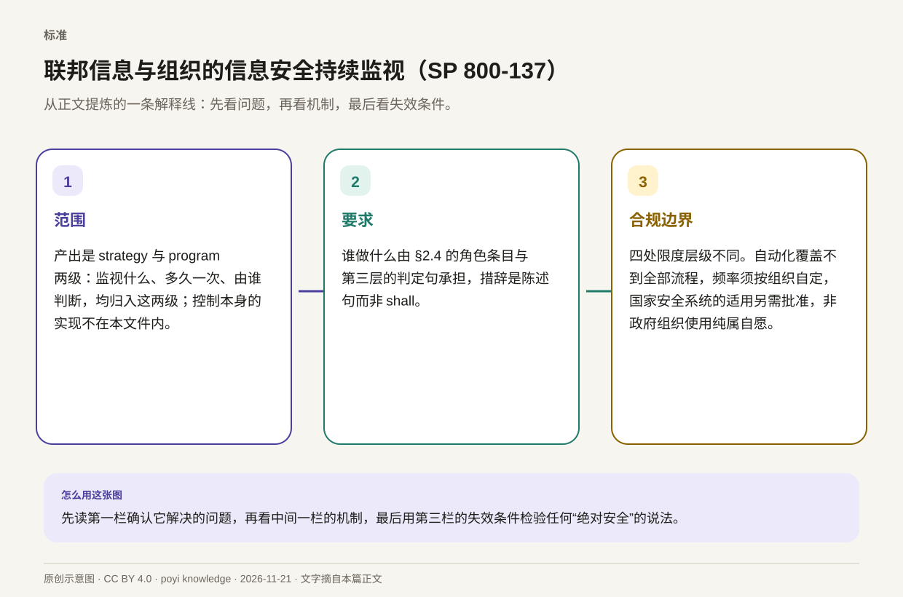
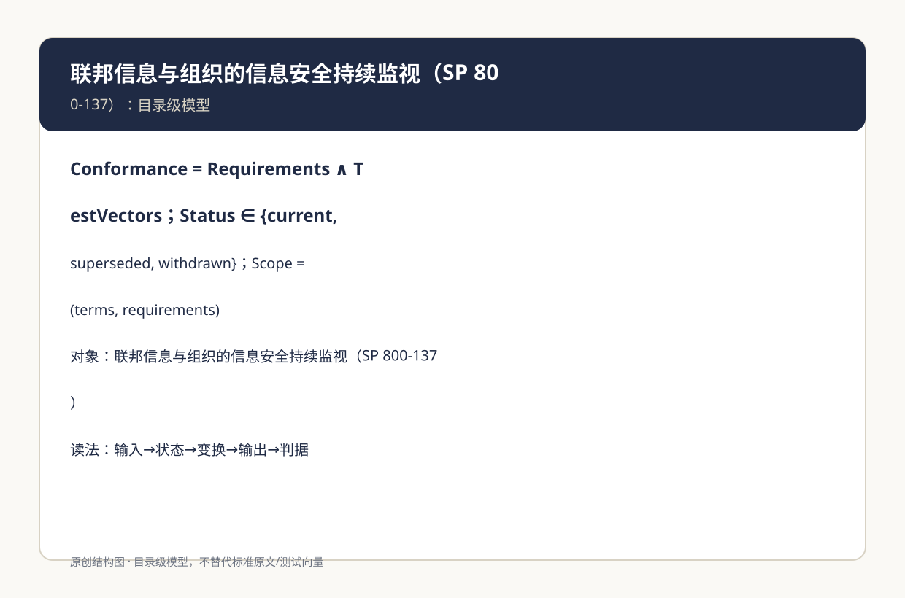

原理与机制
标准：联邦信息与组织的信息安全持续监视（SP 800-137）（Information Security Continuous Monitoring (ISCM) for Federal Information Systems and Organizations (SP 800-137)）。主题定义在文首的执行摘要：「Information security continuous monitoring (ISCM) is defined as maintaining ongoing awareness of information security, vulnerabilities, and threats to support organizational risk management decisions.」§1.3 给出本文件的动作：「The purpose of this guideline is to assist organizations in the development of an ISCM strategy and the implementation of an ISCM program that provides awareness of threats and vulnerabilities, visibility into organizational assets, and the effectiveness of deployed security controls.」同段说明其支撑关系：「The ISCM strategy and program support ongoing assurance that planned and implemented security controls are aligned with organizational risk tolerance, as well as the ability to provide the information needed to respond to risk in a timely manner.」扉页标题行把对象限定在联邦一侧：「Information Security Continuous Monitoring (ISCM) for Federal Information Systems and Organizations」。产出是 strategy 与 program 两级：监视什么、多久一次、由谁判断，均归入这两级；控制本身的实现不在本文件内。

为什么重要
理由先给法定下限再给运行理由。§1.1 交代 2002 年法的要求：「The Federal Information Security Management Act (FISMA) of 2002 further emphasized the importance of continuously monitoring information system security by requiring agencies to conduct assessments of security controls at a frequency appropriate to risk, but no less than annually.」再记当年OMB备忘的口径：「The memorandum provides instructions for annual FISMA reporting and emphasizes monitoring the security state of information systems on an ongoing basis with a frequency sufficient to make ongoing, risk-based decisions.」执行摘要给出资源约束下的必要性：「Timely, relevant, and accurate information is vital, particularly when resources are limited and agencies must prioritize their efforts.」以及前提句：「the ability to manage this technology and to assure confidentiality, integrity, and availability of information is now also mission-critical.」四句连读是本文的立场：年度评估是下限而非足够频率，点状评估之间发生的变更与威胁需要以风险相称的持续可见性来覆盖。
应用与实例
谁做什么由 §2.4 的角色条目与第三层的判定句承担，措辞是陈述句而非 shall。§2.4 写首席信息官：「The CIO ensures that an effective ISCM program is established and implemented for the organization」，写授权官：「reviews security status reports and critical security documents and determines if the risk to the organization from operation of the information system remains acceptable.」§3.1 把频率判定落到系统所有者：「System owners determine assessment frequencies of security controls based on drivers from all three tiers.」并把证据交付写成组织政策决定的下限：「Assessment evidence obtained from ISCM is, at a minimum, provided to AOs as often as required by organizational policy.」同一节把风险档次的判定交给风险执行职能：「The risk executive (function) determines the overall organizational risk tolerance and risk mitigation strategy at the organization tier.」§3.2.2 的判据句在此份文本里报为 §3.1.4：「Organizations take the following criteria into consideration when establishing monitoring frequencies for metrics or assessment frequencies for security controls:」其条目之一即控制易变性：「Volatile security controls are assessed more frequently, whether the objective is establishing security control effectiveness or supporting calculation of a metric.」力度因此是本文件的描述性职责加组织政策：年度下限来自 FISMA，不是本文件的规定。

边界与攻击面
四处限度层级不同。§3.1 自陈非规定性：「The guidelines below, though not prescriptive, helps to ensure an organization-wide approach to ISCM that best promotes standardized methodologies and consistent practices」。第一章开篇承认自动化的边界：该句印在 CHAPTER ONE 与 INTRODUCTION 两个标题之后、1.1 BACKGROUND 之前的正文段内（留存件在这一页仍印着 PAGE 1 的页面板）：「While this document encourages the use of automation, it is recognized that many aspects of ISCM programs are not easily automated.」执行摘要里另印有 must 级的范围句：「It is important to recognize that with any comprehensive information security program, all implemented security controls, including management and operational controls, must be regularly assessed for effectiveness, even if the monitoring of such controls cannot be automated or is not easily automated.」§2.2 说明频率不是可复制的常量：「Monitoring frequencies (e.g., annually, quarterly, monthly, daily) are not static, and they are not uniform across all metrics.」Authority 段两处限定：「such standards and guidelines shall not apply to national security systems without the express approval of appropriate federal officials exercising policy authority over such systems.」与「This publication may be used by nongovernmental organizations on a voluntary basis and is not subject to copyright in the United States.」即这份指南的限度是层级之别而非有无之别：§3.1 自称非规定性，执行摘要却仍落下 must 级的评估范围，并非一律不作规定；自动化覆盖不到全部流程，频率须按组织自定，国家安全系统的适用另需批准，非政府组织使用纯属自愿。
历史与背景
扉页编号行「NIST Special Publication 800-137」，标题行给出 ISCM 缩写与联邦限定，作者行按序列出八人「Kelley Dempsey Nirali Shah Chawla Arnold Johnson Ronald Johnston Alicia Clay Jones Angela Orebaugh Matthew Scholl Kevin Stine」，日期行在扉页上以大写排印为 SEPTEMBER 2011，其下为部与局的署名列「Patrick D.Gallagher, Under Secretary for Standards and Technology and Director」。Authority 页给出依据与规模：「This publication has been developed by NIST to further its statutory responsibilities under the Federal Information Security Management Act (FISMA), Public Law (P.L.) 107-347.」与分行印出的「NIST Special Publication 800-137, 80 pages」，其下一行单独印出括注日期 (September 2011)——本副本里页数与日期是两行，并非连排一行。致谢页把八位作者按单位分开：「The authors, Kelley Dempsey, Arnold Johnson, Matthew Scholl and Kevin Stine of the National Institute of Standards and Technology (NIST), Ronald Johnston of the Department of Defense Chief Information Officer, Defense-wide Information Assurance Program (DOD-CIO, DIAP), Alicia Clay Jones and Angela Orebaugh of Booz Allen Hamilton, and Nirali Shah Chawla of PricewaterhouseCoopers LLP (PwC), wish to thank their colleagues who reviewed drafts of this document and contributed to its technical content.」这份副本无 DOI 行，标题页也无修订号或取代声明；本份文本还把章节标题的行内连字符丢掉（IS CM 与 RES PONS IBILITIES），故未据章节标题断言任何版次事实。
逐步示例与核验
形式模型与复算步骤
[S=\min_i S_i,\quad S_i\in{\text{密钥强度},\text{分组安全},\text{实现安全}}]
联邦信息与组织的信息安全持续监视（SP 800-137）的公开参数、密钥/随机数与消息；变量说明：S 为综合安全强度；各分量取最小值，不能只看密钥位数。1.读取标准规定的密钥/分组/模式参数。2.按标准表换算等效强度。3.取最弱分量作为系统强度。边界：公式只覆盖已登记的参数与假设；参数取值、标准版本和实现细节仍以来源为准。
参考出处
- Wikipedia search entry for 联邦信息与组织的信息安全持续监视（SP 800-137）. https://zh.wikipedia.org/w/index.php?search=%E8%81%94%E9%82%A6%E4%BF%A1%E6%81%AF%E4%B8%8E%E7%BB%84%E7%BB%87%E7%9A%84%E4%BF%A1%E6%81%AF%E5%AE%89%E5%85%A8%E6%8C%81%E7%BB%AD%E7%9B%91%E8%A7%86%EF%BC%88SP%20800-137%EF%BC%89
- Handbook of Applied Cryptography (Menezes, van Oorschot, Vanstone). https://www.cacr.math.uwaterloo.ca/hac/